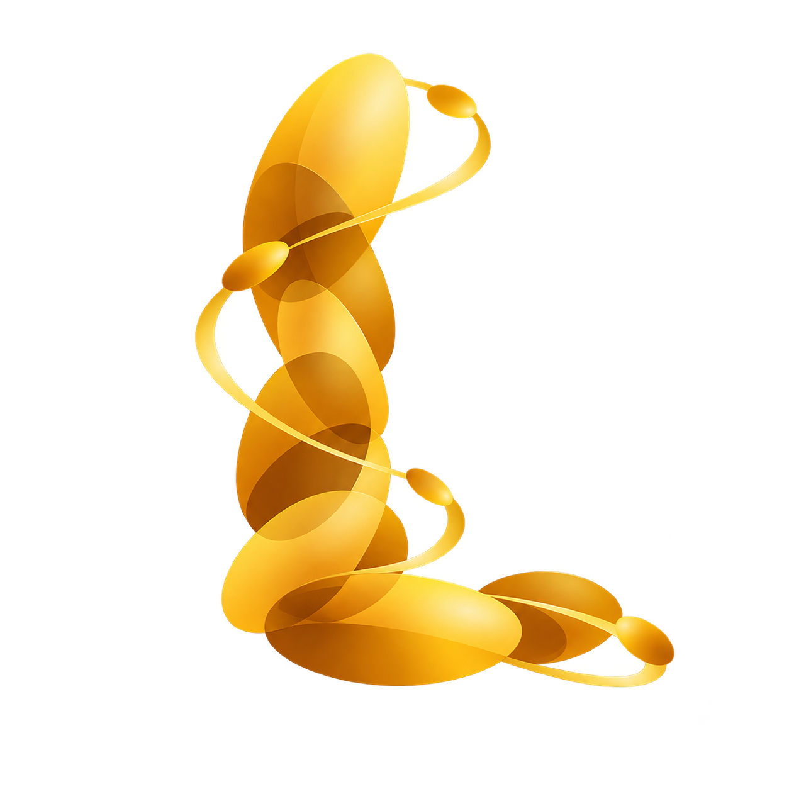

Streaming geometry
LoGeR processes overlapping chunks with hybrid memory, predicting camera poses, dense geometry, and long-context features. A Gaussian decoder maps these features to scene primitives.
Long-context feed-forward 3D reconstruction

onGaussian:Tracking Foundation Priors for Long-ContextHuazhong University of Science and Technology
* Corresponding author
fewer Gaussians than OF3GS
at RE10K / 64 views
frames in a single-scene
scalability study
Background: LonGaussian rendering along a DL3DV sequence reconstructed from 96 context views.
Explore the workFrom thousands of input frames to a renderable Gaussian scene.
As a camera moves, the same surfaces appear again and again. Predicting a Gaussian at every input pixel and accumulating these predictions repeatedly represents the same geometry. Streaming the backbone alone does not remove this redundancy.
LonGaussian connects streaming geometry with correspondence-guided consolidation. LoGeR provides long-context features and camera estimates. Within each chunk, multi-frame tracks associate repeated observations, and a learned merger consolidates their Gaussian predictions. A dense complement preserves regions without reliable tracks.
Reconstructing high-quality, renderable 3D scenes from long videos is essential for robotic perception and embodied intelligence. Many feed-forward Gaussian reconstruction methods rapidly predict 3D scenes from a small set of images, but extending them to longer sequences presents two bottlenecks: jointly processing all views increases GPU memory requirements, while accumulating pixel-aligned predictions redundantly represents the same surfaces and increases storage and rendering costs.
We present LonGaussian, a streaming feed-forward framework that reconstructs compact, globally renderable Gaussian scenes from long image sequences with known intrinsics and unknown camera poses. Built on a pretrained streaming 3D reconstruction backbone, LonGaussian decodes long-context geometric features into dense Gaussians. Within each chunk, multi-frame point tracks link repeated observations of the same surface and guide a learned merger to consolidate the corresponding Gaussian predictions. Rendered-depth consistency filtering further suppresses Gaussians from other chunks that incorrectly occlude locally reconstructed surfaces. On DL3DV and RealEstate10K benchmarks, LonGaussian improves novel-view rendering quality while using substantially fewer Gaussians than the evaluated feed-forward baselines.
Stream the geometry. Associate observations. Consolidate the representation.
LoGeR processes overlapping chunks with hybrid memory, predicting camera poses, dense geometry, and long-context features. A Gaussian decoder maps these features to scene primitives.
AllTracker links observations of the same surface within a chunk. The learned merger refines representative Gaussians; a dense complement retains content without reliable track support.
Chunk predictions enter a shared coordinate system. Rendered-depth voting suppresses cross-chunk occluders, while a far-field Gaussian shell models unstable sky geometry.
Compare DL3DV and RealEstate10K sequences using one synchronized player. Drag the divider to reveal the selected reference.
DL3DV
Select a scene and a reference method, then drag to compare.
Drag to compare · synchronized video playback
These videos interleave context views (CTX) and held-out novel views (NVS); the badge identifies the current frame. Scenes are reconstructed from context images only. Each method estimates its own camera poses using the paper's evaluation protocol. Playback speed is for visualization and does not measure inference throughput.
Benchmark averages using complete accumulated scenes and held-out target views.
| Method | PSNR ↑ | SSIM ↑ | LPIPS ↓ | # Gaussians (M) ↓ |
|---|---|---|---|---|
| ReCoSplat (official) | 13.67 | 0.237 | 0.654 | 13.17 |
| ReCoSplat (adapted) | 15.74 | 0.282 | 0.606 | 13.17 |
| OF3GS | 15.31 | 0.404 | 0.545 | 10.45 |
| LonGaussian (Ours) | 18.88 | 0.575 | 0.420 | 3.54 |
Best entries are emphasized. WorldMirror and AnySplat exceed the 24 GB budget at all reported lengths; see the paper for the full table. ReCoSplat (adapted) is our local resolution adaptation of the released model.
A single-scene case study extending to thousands of frames.
In this scene, construction time and Gaussian count grow approximately linearly across six prefixes. Peak construction memory stays near 20 GB.
Long-range revisits remain challenging: LoGeR pose errors can misalign distant chunks and produce ghosting. The long-sequence image metrics use a local seven-chunk scope, so they do not establish full-scene global rendering fidelity.
Resource measurements cover streaming construction; time excludes model loading, metric rendering, and offline prefix filtering.
Explore indoor and outdoor scenes reconstructed from complete context sequences. Select a scene, then load its Gaussian rendering.
Gaussian rendering · loads on demand
Drag to orbit · right-drag to pan · scroll to zoom · Reset view to return
Each viewer loads the complete reconstructed scene, with view-dependent Gaussian colors. Explore nearby views within the camera coverage; Reset view returns to the original camera.
@inproceedings{xie2026longaussian,
title={LonGaussian: Tracking Foundation Priors for Long-Context Feedforward Gaussian Reconstruction},
author={Xie, Zhoufeng and Wu, Guanjun and Zhang, Shuai and Wang, Xinggang and Liu, Wenyu},
booktitle={Submitted to The Fifteenth International Conference on Learning Representations},
year={2026},
url={https://openreview.net/forum?id=WiNCsgDP25},
note={under review}
}Under review.